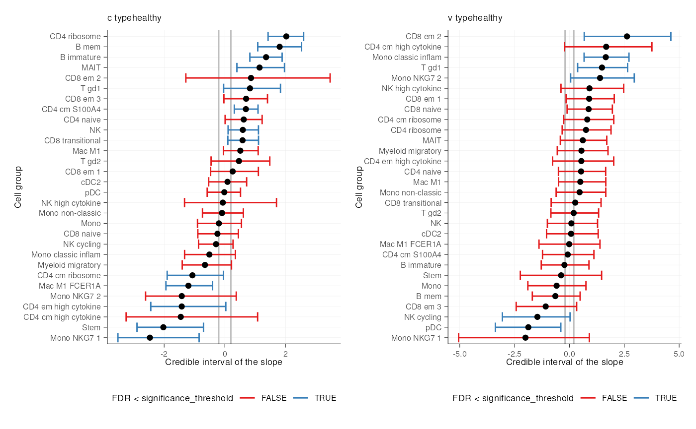

Overview of the sccomp package
Stefano Mangiola
2023-11-02
Source:vignettes/introduction.Rmd
introduction.Rmd

Installation
Bioconductor
if (!requireNamespace("BiocManager")) install.packages("BiocManager")
BiocManager::install("sccomp")Github
devtools::install_github("stemangiola/sccomp")Analysis
sccomp can model changes in composition and variability.
By default, the formula for variability is either ~1, which
assumes that the cell-group variability is independent of any covariate
or ~ factor_of_interest, which assumes that the model is
dependent on the factor of interest only. The variability model must be
a subset of the model for composition.
Binary factor
From Seurat, SingleCellExperiment, metadata objects
single_cell_object |>
sccomp_glm(
formula_composition = ~ type,
.sample = sample,
.cell_group = cell_group,
bimodal_mean_variability_association = TRUE,
cores = 1
)From counts
counts_obj |>
sccomp_glm(
formula_composition = ~ type,
.sample = sample,
.cell_group = cell_group,
.count = count,
bimodal_mean_variability_association = TRUE,
cores = 1
)## # A tibble: 72 × 18
## cell_group parameter factor c_lower c_effect c_upper c_pH0 c_FDR c_n_eff
## <chr> <chr> <chr> <dbl> <dbl> <dbl> <dbl> <dbl> <dbl>
## 1 B1 (Intercep… NA 0.886 1.11 1.34 0 0 4575.
## 2 B1 typecancer type -1.16 -0.762 -0.396 0.00250 8.75e-4 4356.
## 3 B2 (Intercep… NA 0.411 0.704 0.989 0.00125 8.75e-5 5281.
## 4 B2 typecancer type -1.21 -0.726 -0.251 0.0142 4.48e-3 5548.
## 5 B3 (Intercep… NA -0.663 -0.391 -0.121 0.0810 7.08e-3 4585.
## 6 B3 typecancer type -0.725 -0.317 0.0697 0.285 6.80e-2 5849.
## 7 BM (Intercep… NA -1.32 -1.03 -0.742 0 0 5363.
## 8 BM typecancer type -0.746 -0.317 0.0964 0.290 7.90e-2 4659.
## 9 CD4 1 (Intercep… NA 0.0849 0.301 0.509 0.169 2.65e-2 5128.
## 10 CD4 1 typecancer type -0.102 0.182 0.464 0.545 1.54e-1 4597.
## # ℹ 62 more rows
## # ℹ 9 more variables: c_R_k_hat <dbl>, v_lower <dbl>, v_effect <dbl>,
## # v_upper <dbl>, v_pH0 <dbl>, v_FDR <dbl>, v_n_eff <dbl>, v_R_k_hat <dbl>,
## # count_data <list>Of the output table, the estimate columns start with the prefix
c_ indicate composition, or with
v_ indicate variability (when
formula_variability is set).
Contrasts
seurat_obj |>
sccomp_glm(
formula_composition = ~ 0 + type,
contrasts = c("typecancer - typehealthy", "typehealthy - typecancer"),
.sample = sample,
.cell_group = cell_group,
bimodal_mean_variability_association = TRUE,
cores = 1
)## # A tibble: 60 × 18
## cell_group parameter factor c_lower c_effect c_upper c_pH0 c_FDR c_n_eff
## <chr> <chr> <chr> <dbl> <dbl> <dbl> <dbl> <dbl> <dbl>
## 1 B immature typecanc… type -1.88 -1.41 -0.944 0 0 NA
## 2 B immature typeheal… type 0.944 1.41 1.88 0 0 NA
## 3 B mem typecanc… type -2.34 -1.73 -1.13 2.50e-4 6.25e-5 NA
## 4 B mem typeheal… type 1.13 1.73 2.34 2.50e-4 6.25e-5 NA
## 5 CD4 cm S10… typecanc… type -1.24 -0.857 -0.489 2.50e-4 1.00e-4 NA
## 6 CD4 cm S10… typeheal… type 0.489 0.857 1.24 2.50e-4 1.00e-4 NA
## 7 CD4 cm hig… typecanc… type 0.901 1.82 2.93 0 0 NA
## 8 CD4 cm hig… typeheal… type -2.93 -1.82 -0.901 0 0 NA
## 9 CD4 cm rib… typecanc… type 0.343 0.998 1.71 8. e-3 2.52e-3 NA
## 10 CD4 cm rib… typeheal… type -1.71 -0.998 -0.343 8. e-3 2.52e-3 NA
## # ℹ 50 more rows
## # ℹ 9 more variables: c_R_k_hat <dbl>, v_lower <dbl>, v_effect <dbl>,
## # v_upper <dbl>, v_pH0 <dbl>, v_FDR <dbl>, v_n_eff <dbl>, v_R_k_hat <dbl>,
## # count_data <list>Categorical factor (e.g. Bayesian ANOVA)
This is achieved through model comparison with loo. In
the following example, the model with association with factors better
fits the data compared to the baseline model with no factor association.
For comparisons check_outliers must be set to FALSE as the
leave-one-out must work with the same amount of data, while outlier
elimination does not guarantee it.
If elpd_diff is away from zero of > 5
se_diff difference of 5, we are confident that a model is
better than the other reference.
In this case, -79.9 / 11.5 = -6.9, therefore we can conclude that model
one, the one with factor association, is better than model two.
library(loo)
# Fit first model
model_with_factor_association =
seurat_obj |>
sccomp_glm(
formula_composition = ~ type,
.sample = sample,
.cell_group = cell_group,
check_outliers = FALSE,
bimodal_mean_variability_association = TRUE,
cores = 1,
enable_loo = TRUE
)
# Fit second model
model_without_association =
seurat_obj |>
sccomp_glm(
formula_composition = ~ 1,
.sample = sample,
.cell_group = cell_group,
check_outliers = FALSE,
bimodal_mean_variability_association = TRUE,
cores = 1 ,
enable_loo = TRUE
)
# Compare models
loo_compare(
model_with_factor_association |> attr("fit") |> loo(),
model_without_association |> attr("fit") |> loo()
)Differential variability, binary factor
We can model the cell-group variability also dependent on the type, and so test differences in variability
res =
seurat_obj |>
sccomp_glm(
formula_composition = ~ type,
formula_variability = ~ type,
.sample = sample,
.cell_group = cell_group,
bimodal_mean_variability_association = TRUE,
cores = 1
)
res## # A tibble: 60 × 18
## cell_group parameter factor c_lower c_effect c_upper c_pH0 c_FDR c_n_eff
## <chr> <chr> <chr> <dbl> <dbl> <dbl> <dbl> <dbl> <dbl>
## 1 B immature (Interce… NA 0.545 0.938 1.32 5.00e-4 3.85e-5 5937.
## 2 B immature typeheal… type 0.829 1.36 1.90 0 0 4934.
## 3 B mem (Interce… NA -1.29 -0.752 -0.130 3.65e-2 2.59e-3 5659.
## 4 B mem typeheal… type 1.09 1.80 2.52 0 0 4588.
## 5 CD4 cm S10… (Interce… NA 1.72 1.98 2.23 0 0 5483.
## 6 CD4 cm S10… typeheal… type 0.308 0.704 1.10 8.25e-3 3.29e-3 5622.
## 7 CD4 cm hig… (Interce… NA -0.866 -0.408 0.0874 1.94e-1 2.73e-2 4532.
## 8 CD4 cm hig… typeheal… type -3.23 -1.46 1.07 1.56e-1 5.17e-2 3621.
## 9 CD4 cm rib… (Interce… NA 0.139 0.478 0.822 5.75e-2 9.61e-3 3899.
## 10 CD4 cm rib… typeheal… type -1.92 -1.08 -0.0331 4.55e-2 9.72e-3 4683.
## # ℹ 50 more rows
## # ℹ 9 more variables: c_R_k_hat <dbl>, v_lower <dbl>, v_effect <dbl>,
## # v_upper <dbl>, v_pH0 <dbl>, v_FDR <dbl>, v_n_eff <dbl>, v_R_k_hat <dbl>,
## # count_data <list>Suggested settings
Visualisation
Summary plots
plots = plot_summary(res) ## Joining with `by = join_by(cell_group, sample)`
## Joining with `by = join_by(cell_group, type)`## Warning: Expected 2 pieces. Additional pieces discarded in 4 rows [6, 7,
## 13, 14].A plot of group proportion, faceted by groups. The blue boxplots
represent the posterior predictive check. If the model is likely to be
descriptively adequate to the data, the blue box plot should roughly
overlay with the black box plot, which represents the observed data. The
outliers are coloured in red. A box plot will be returned for every
(discrete) covariate present in formula_composition. The
colour coding represents the significant associations for composition
and/or variability.
plots$boxplot## [[1]]
A plot of estimates of differential composition (c_) on the x-axis and differential variability (v_) on the y-axis. The error bars represent 95% credible intervals. The dashed lines represent the minimal effect that the hypothesis test is based on. An effect is labelled as significant if bigger than the minimal effect according to the 95% credible interval. Facets represent the covariates in the model.
plots$credible_intervals_1D
Visualisation of the MCMC chains from the posterior distribution
It is possible to directly evaluate the posterior distribution. In this example, we plot the Monte Carlo chain for the slope parameter of the first cell type. We can see that it has converged and is negative with probability 1.

Plot 1D significance plot
plots = plot_summary(res)## Joining with `by = join_by(cell_group, sample)`
## Joining with `by = join_by(cell_group, type)`## Warning: Expected 2 pieces. Additional pieces discarded in 4 rows [6, 7,
## 13, 14].
plots$credible_intervals_1D
Plot 2D significance plot. Data points are cell groups. Error bars are the 95% credible interval. The dashed lines represent the default threshold fold change for which the probabilities (c_pH0, v_pH0) are calculated. pH0 of 0 represent the rejection of the null hypothesis that no effect is observed.
This plot is provided only if differential variability has been
tested. The differential variability estimates are reliable only if the
linear association between mean and variability for
(intercept) (left-hand side facet) is satisfied. A
scatterplot (besides the Intercept) is provided for each category of
interest. The for each category of interest, the composition and
variability effects should be generally uncorrelated.
plots$credible_intervals_2D
## R version 4.2.3 (2023-03-15)
## Platform: x86_64-pc-linux-gnu (64-bit)
## Running under: Ubuntu 22.04.2 LTS
##
## Matrix products: default
## BLAS: /usr/lib/x86_64-linux-gnu/openblas-pthread/libblas.so.3
## LAPACK: /usr/lib/x86_64-linux-gnu/openblas-pthread/libopenblasp-r0.3.20.so
##
## locale:
## [1] LC_CTYPE=en_US.UTF-8 LC_NUMERIC=C
## [3] LC_TIME=en_US.UTF-8 LC_COLLATE=en_US.UTF-8
## [5] LC_MONETARY=en_US.UTF-8 LC_MESSAGES=en_US.UTF-8
## [7] LC_PAPER=en_US.UTF-8 LC_NAME=C
## [9] LC_ADDRESS=C LC_TELEPHONE=C
## [11] LC_MEASUREMENT=en_US.UTF-8 LC_IDENTIFICATION=C
##
## attached base packages:
## [1] stats graphics grDevices utils datasets methods base
##
## other attached packages:
## [1] rstan_2.32.2 StanHeaders_2.32.2 tidyr_1.3.0 forcats_1.0.0
## [5] ggplot2_3.4.2 sccomp_1.5.1 dplyr_1.1.1 BiocStyle_2.26.0
##
## loaded via a namespace (and not attached):
## [1] bitops_1.0-7 matrixStats_0.63.0
## [3] fs_1.6.1 RColorBrewer_1.1-3
## [5] rprojroot_2.0.3 GenomeInfoDb_1.34.9
## [7] tools_4.2.3 bslib_0.4.2
## [9] utf8_1.2.3 R6_2.5.1
## [11] BiocGenerics_0.44.0 colorspace_2.1-0
## [13] withr_2.5.0 sp_1.6-0
## [15] gridExtra_2.3 prettyunits_1.1.1
## [17] tidyselect_1.2.0 processx_3.8.1
## [19] compiler_4.2.3 progressr_0.13.0
## [21] textshaping_0.3.6 cli_3.6.1
## [23] Biobase_2.58.0 desc_1.4.2
## [25] DelayedArray_0.24.0 labeling_0.4.2
## [27] bookdown_0.33 sass_0.4.5
## [29] scales_1.2.1 readr_2.1.4
## [31] callr_3.7.3 QuickJSR_1.0.3
## [33] pkgdown_2.0.7 systemfonts_1.0.4
## [35] stringr_1.5.0 digest_0.6.31
## [37] rmarkdown_2.21 XVector_0.38.0
## [39] pkgconfig_2.0.3 htmltools_0.5.5
## [41] parallelly_1.35.0 MatrixGenerics_1.10.0
## [43] highr_0.10 fastmap_1.1.1
## [45] rlang_1.1.0 farver_2.1.1
## [47] jquerylib_0.1.4 generics_0.1.3
## [49] jsonlite_1.8.4 inline_0.3.19
## [51] RCurl_1.98-1.12 magrittr_2.0.3
## [53] GenomeInfoDbData_1.2.9 loo_2.6.0
## [55] patchwork_1.1.2 Matrix_1.5-4
## [57] Rcpp_1.0.10 munsell_0.5.0
## [59] S4Vectors_0.36.2 fansi_1.0.4
## [61] lifecycle_1.0.3 stringi_1.7.12
## [63] yaml_2.3.7 SummarizedExperiment_1.28.0
## [65] zlibbioc_1.44.0 pkgbuild_1.4.0
## [67] grid_4.2.3 parallel_4.2.3
## [69] listenv_0.9.0 ggrepel_0.9.3
## [71] crayon_1.5.2 lattice_0.21-8
## [73] hms_1.1.3 ps_1.7.5
## [75] knitr_1.42 pillar_1.9.0
## [77] GenomicRanges_1.50.2 boot_1.3-28.1
## [79] future.apply_1.10.0 codetools_0.2-19
## [81] stats4_4.2.3 rstantools_2.3.1
## [83] glue_1.6.2 evaluate_0.20
## [85] SeuratObject_4.1.3 BiocManager_1.30.20
## [87] RcppParallel_5.1.7 vctrs_0.6.2
## [89] tzdb_0.3.0 gtable_0.3.3
## [91] purrr_1.0.1 future_1.32.0
## [93] cachem_1.0.7 xfun_0.38
## [95] ragg_1.2.5 SingleCellExperiment_1.20.1
## [97] tibble_3.2.1 memoise_2.0.1
## [99] IRanges_2.32.0 globals_0.16.2